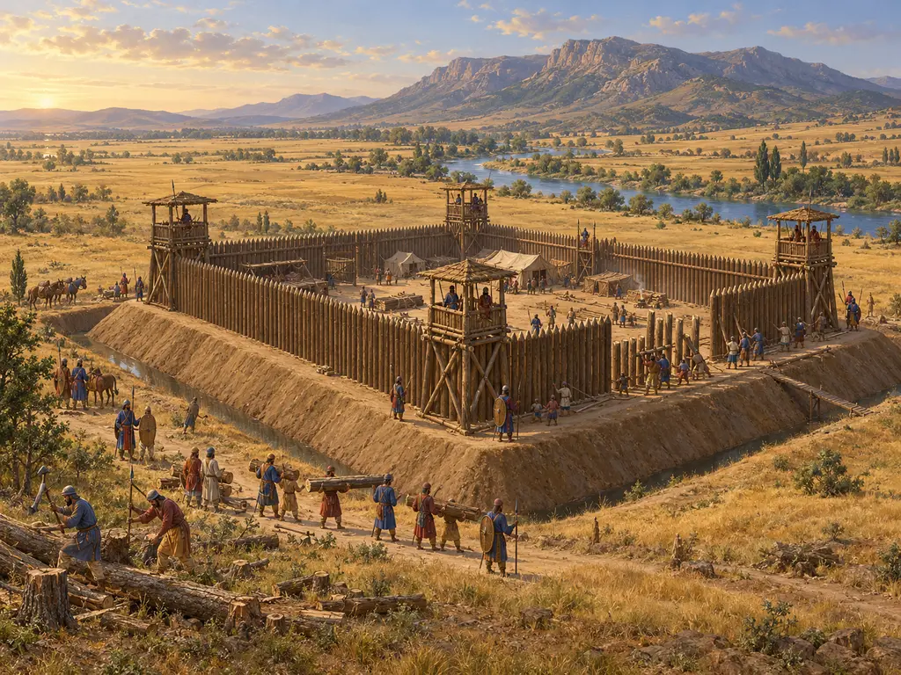
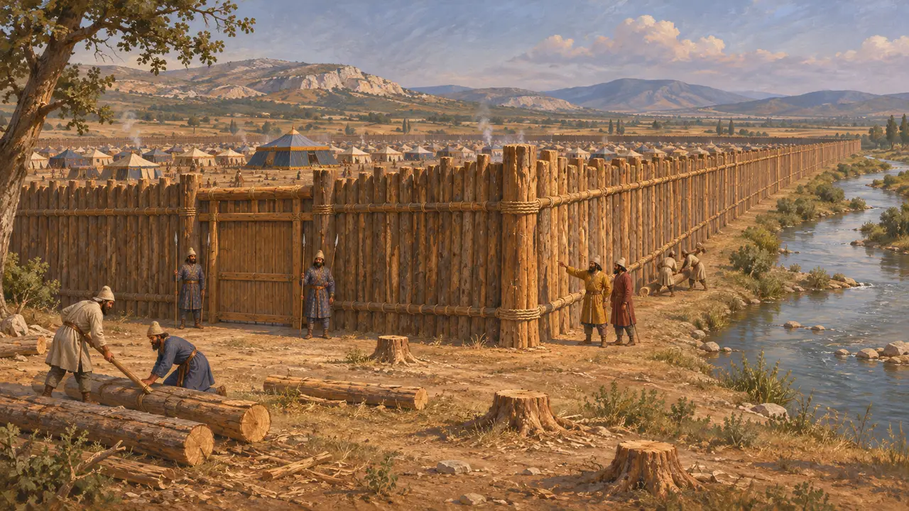
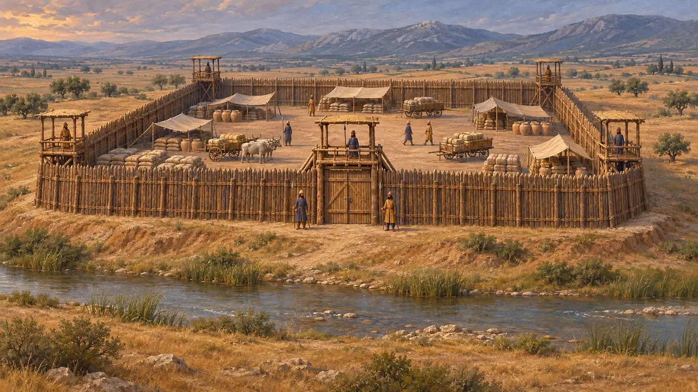
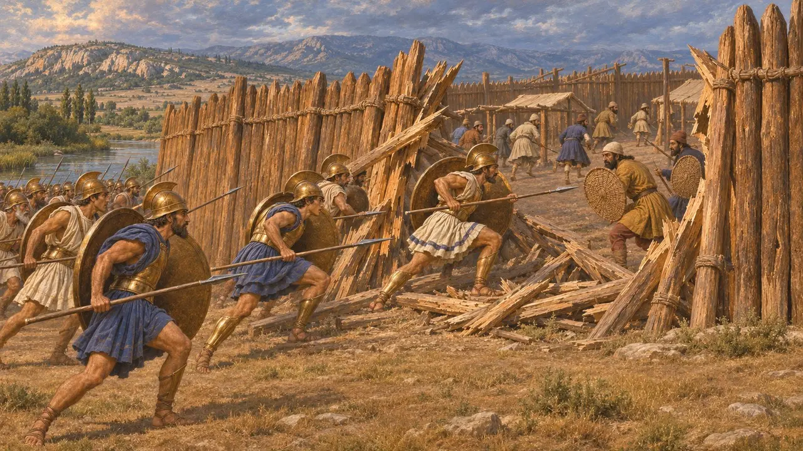
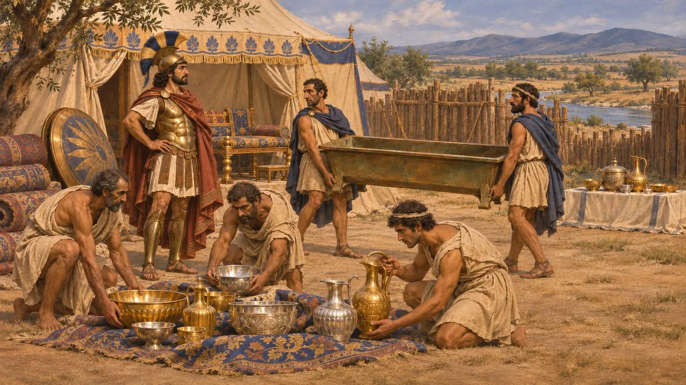
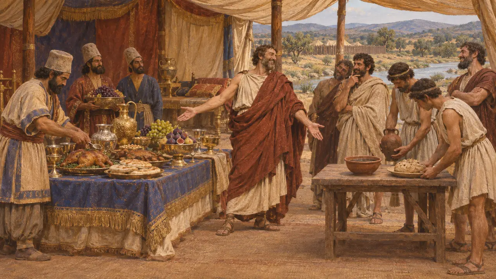

Forte de Mardônio
Fortaleza persa de madeira às margens do rio Asopo, na Beócia, 479 AEC
No jogo: Nível 11: O Final
Antes da batalha de Plateia, o comandante persa Mardônio construiu um forte quadrado de madeira em território tebano, junto ao Asopo, como refúgio para seu exército. Segundo Heródoto, media cerca de dez estádios de cada lado. Após a queda de Mardônio, suas tropas derrotadas fugiram para dentro dele, e sua tomada pelos gregos encerrou a última campanha terrestre persa na Grécia continental.
No jogo: O jogo o situa a até quatro células do Asopo e o constrói com cevada, madeira e calcário. Heródoto menciona apenas um muro de madeira, construído em 479 AEC; o terrapleno, o fosso, as torres e os portões de calcário são reconstrução do jogo.

Uma muralha de madeira em terras tebanas
Relato antigoHeródoto conta que, em 479 AEC, Mardônio se retirou da Ática para a Beócia e acampou ao longo do Asopo, de Eritreia, passando por Hísias, até as terras de Plateia. Mandou derrubar as árvores da região para construir uma muralha de madeira, embora os tebanos fossem seus aliados. O forte deveria servir de refúgio caso a batalha corresse mal. Segundo Heródoto, media cerca de dez estádios de lado, aproximadamente 1,8 quilômetro.
Herodotus 9.15

Onde ficava e qual era seu tamanho
DisputadoNenhum vestígio do forte foi encontrado e nenhum texto persa o menciona, por isso sua localização exata ao norte do Asopo ainda é debatida. Um quadrado de dez estádios não comportaria os 300.000 homens que Heródoto atribui a Mardônio, número que a maioria dos historiadores considera muito exagerado. Muitos estudiosos, portanto, veem o forte como uma base protegida para bagagens, suprimentos e uma guarnição, e não como acampamento de todo o exército.
J. F. Lazenby, The Defence of Greece 490-479 BC, 1993; P. Green, The Greco-Persian Wars, 1996

O assalto ao forte
Relato antigoDepois que Mardônio foi morto, diz Heródoto, os persas correram de volta à muralha de madeira e a defenderam contra os espartanos, que tinham pouca habilidade em atacar muralhas. Quando os atenienses chegaram, abriram uma brecha, os tegeatas entraram primeiro e seguiu-se um massacre. Heródoto afirma que menos de 3.000 sobreviveram, sem contar os 40.000 levados por Artabazo, números que os historiadores modernos tratam com cautela.
Herodotus 9.65; Herodotus 9.66; Herodotus 9.70

Os despojos do acampamento
Relato antigoHeródoto descreve vasos de ouro e prata, tendas suntuosas e mobiliário tomados do acampamento persa. Os tegeatas levaram uma manjedoura de bronze dos cavalos de Mardônio e a dedicaram a Atena Aleia. Pausânias mandou que os hilotas reunissem o espólio, e um décimo foi reservado aos deuses em Delfos, Olímpia e no Istmo.
Herodotus 9.70; Herodotus 9.80-81

Dois jantares na tenda de Mardônio
Lenda posteriorHeródoto conta que Pausânias, ao encontrar a tenda que Xerxes deixara para Mardônio, ordenou aos cozinheiros persas que preparassem um banquete real e a seus próprios servos que servissem ao lado uma refeição espartana simples. Depois riu da insensatez de um homem que vivia com tanta riqueza e ainda assim viera tirar dos gregos sua parca comida. A história é moldada como um conto moral sobre riqueza e simplicidade.
Herodotus 9.82
Fontes
- Herodotus, Histories, book 9
- J. F. Lazenby, The Defence of Greece 490-479 BC, 1993
- P. Green, The Greco-Persian Wars, 1996
- Diodorus, Library 11
- P. Briant, From Cyrus to Alexander, 2002